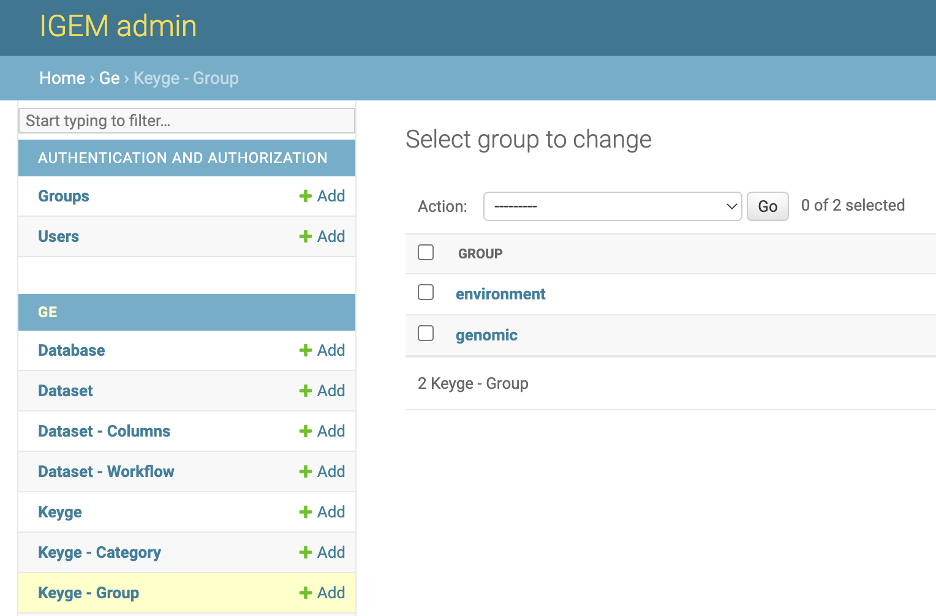
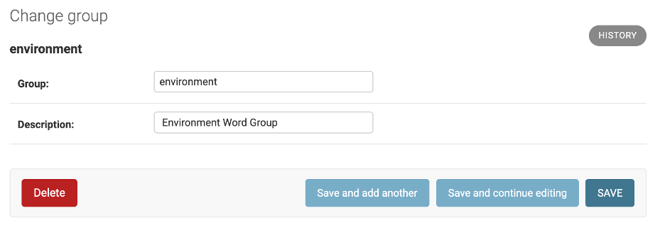
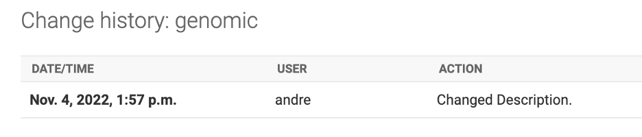
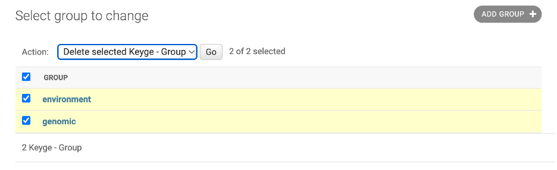

Group¶
The group master data acts as a qualitative characteristic for the Keyge being the highest level of the hierarchical structure, followed by the Category and then the Keyge.
The system uses the GROUP information as a filter in queries and other interfaces. An example of the use of GROUP will be the Gene Exposome Report, in which the system will use the GROUP to select which KEYGE will be considered as Exposome.
- The GROUP data will be stored in the ge_group table of the IGEM DB defined in the initial parameters. The available fields are:
ID: GE.db internal key
group: Abbreviated name of the GROUP
Description: Description for identifying and consulting the GROUP
The inclusion of new data can be performed via the process db . On the command line:
$ python manage.py db --load group --path {path/filename}.csv
Example of the load file can be found in the folder src/load/md/group.csv
To list the GROUP already registered, type the command line:
$ python manage.py db --show group
To download the GROUP already registered, type the command line:
$ python manage.py db --download group --path {path/filename}.csv
To delete a specific GROUP, type the command line:
$ python manage.py db --delete group --group {Group Abbreviated Name}
To delete all GROUP Table. type the command line:
$ python manage.py db --truncate group
CAUTION: As GE.db is a correlational base with key integrity, all records linked to the deleted data will also be deleted, which includes KEYGE and KEYGELINKS information
GROUP Web Interface¶
Through IGEM’s friendly web interface, it will be possible to carry out GROUP management activities.
Activate the IGEM web service if you have not already done so. Go to the /src/ folder and type the command line:
$ python manage.py runserver

If it returns a port error, you can specify a different port:
$ python manage.py runserver 8080
Access the address in the link provided in Starting development server. Significantly, this address may vary depending on the initial settings performed during installation.
After user authentication and on the initial administration screen, select an option Keyge-Group.

On the Group screen, we will have options to consult, modify, add and eliminate GROUP.
On the first screen, we have a view of all available GROUP. To consult, click a desired GROUP.
- On the next screen, we have all the GROUP fields open for modifications. To modify, change the desired information and select one of the three button options:
Save and add another: Will save the changes and open a blank GROUP screen to add a new GROUP record.Save and Continue editing: Will save the changes and continue on the GROUP screen.Save: Will save the changes and return to the screen with the list of GROUP.
In the History button, we can consult all the modifications carried out in the GROUP, this function will be important to track modifications and audit the process.
The DELETE button will permanently delete the GROUP record.
Caution: when deleting a GROUP, the system will also delete all records dependent on that GROUP, which include KEYGE, and KEYLINKS
Deletion can also be performed en bloc. On the GROUP List screen, select all the GROUPS you want to delete, choose the Delete Selected Keyge - Groups action and click on the GO button.
Be careful, this elimination operation will be definitive for the GROUPS and for all other records dependent on it, as already explained.
- To add new GROUP, we will have three different ways:
by the
+ Addbutton on the left sidebar.Through the
ADD GROUP +button in the right field of the GOUP list.Via the
Save and add anotherbutton located within a GROUP record.